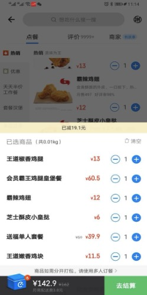
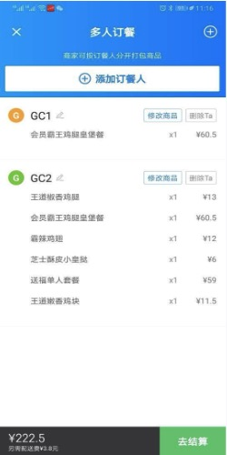
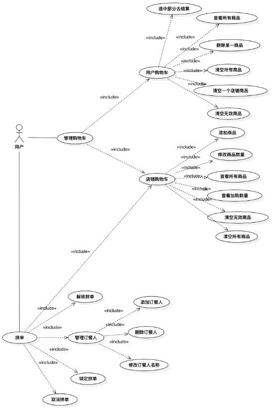
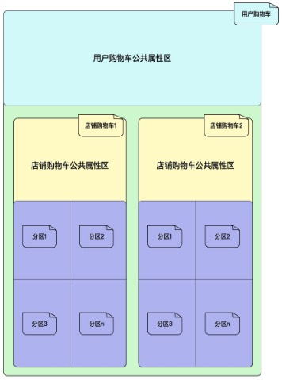
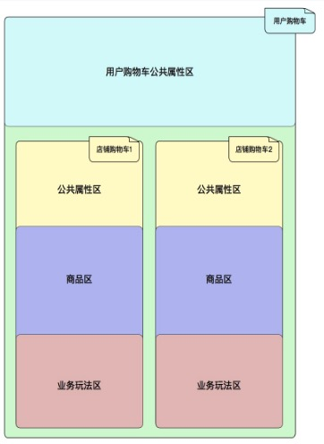
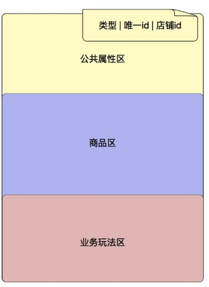
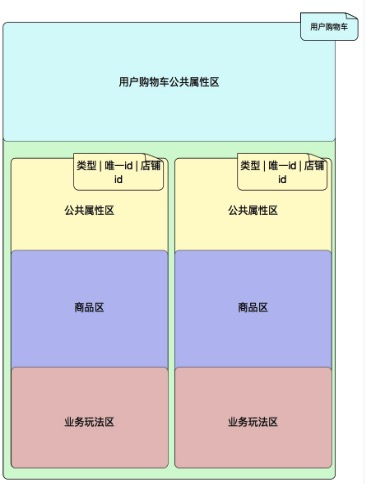

饿了么购物车Python转Java过程中的思考
在饿了么购物车Python转Java过程中的一些思考
背景介绍
饿了么开发语言多样，python，java， go， php 应有尽有，同样导致基础框架就会有很多，维护成本高，同时阿里集团在java语言的支持上有着绝对的优势，所以综合考虑，为了节约成本，集中力量干大事，又能借助集团强大的技术支持，更好的向阿里生态靠拢，从而有了这样一件事情：后端语言统一，全站转Java。 （好吧，事情确实有，原因是我猜的，不过整件事个人还是很赞同）
说购物车的事情，饿了么交易后端是用python写的，这次要做的就是将python转成java，在转语言的过程中，争取能够做一定的抽象，更好的支撑后面业务的发展。 而原研发团队资源有限，还有快速发展的业务需求压在头顶，所以尝试了这样一个模式：从其他团队中凑一些人出来，帮助大的项目做语言转型。所以，我就有幸加入到这件事中，跟另两位小伙伴@佩晗 @丽军 一起做购物车转型这一块。
再说下段位，本人对购物车的逻辑是一窍不通，python会一点点，也就是勉强看的懂，会写两行，另外两位情况跟我差不多，语言层面比我好不到哪去（这么说不会打我吧…）
最后说下为什么有这篇文章，原因有两个： 一是我觉得这事情蛮有意思的，有收获，值得总结；二是为了交接，毕竟我们是属于被“借来”的人，维护还是要交给原团队，说清过程，道明坑，方便交接，也算是对其负责，毕竟不是源码翻译，外包的话还要输出个使用手册。
关卡分析
这件事情整体难度系数还是蛮高的，可遇见的关卡就有很多，当然在转型的过程中更是一步一个坑，先一一列举下：
- 业务不熟悉
我们对购物车这块的业务基本处于完全不熟悉的状态，更别提业务边界和功能了。要说熟悉也就只停留在用过。（说句题外话，如果不做这个事情，我都不知道原来饿了么还有用户购物车的存在😂）
- 语言不熟悉
python语言，也就是会写写脚本，高级语法平时也不用，不过勉强还是看得懂。 这就促成了一个极为尴尬的事情：业务发展这么久，没有开发或产品能够讲出所有清细枝末节，很多逻辑只能从代码中看，而python代码确实灵活，举个具体的例子就是完全搞不清一个class里面有多少属性，上千行的class/method中用到的东西都不知道哪里塞进来的。假设：如果有人/文档清楚所有逻辑，那就无需看代码了。当然如果代码逻辑能理清楚也行，就是效率低点。
- 时间紧张
从现在往前看， 从熟悉业务和代码到开发完成提测用了70个人日， 后面改bug，补坑，数据比对，灰度超过70个，总时间两个多月差不多，一开始安排的时间确实比较紧。
- 业务抽象
开发本身对业务不了解，那么业务抽象可能更多依靠产品输出，而产品好像总是跟开发差那么一点东西，所以业务抽象这个事情做的不尽人意，都说慢功出细活，但时间上又比较尴尬，只能说，尽力了。
- 灰度方案
这个事情最终要的一点就是：无感知。如何做到转型对端无感知，灰度迁移和故障回切对用户无感知。购物车转型这有个前提就是完全使用新的数据结构，开辟新的存储，所以用流量回放和数据比对可以很完美的做数据一致性的校验，不会因为同时写一块存储而导致弄脏数据。而难点也是因为新开辟存储，所以灰度数据迁移和故障回切如何保证用户无感知就是技术问题了，当然这与上面的关卡比起来反而容易解决的多。
这些是都开始做之前能预见，后面还踩了很多坑。
用例梳理
用例梳理是非常有必要的，以前我一直觉得用例图无关紧要，但这次发现好的用例图能够明确工作目标，对定义功能和领域边界都有一定的帮助，而详细精确的用例图能够对代码的设计有很大的帮助，至少可以减少后面我们踩的很多坑。
先看端上的图，直观的理解下购物车功能：
-
店铺购物车： 展示一个用户在指定某个店下加购商品的列表，包括商品价钱和优惠提示（小黄条）
 -
用户购物车：展示一个用户加购了商品的所有店铺购物车， 是店铺购物车的聚合，展示上比店铺购物车更轻量
-
拼单购物车：允许多个人加购到一个店铺购物车中，并且标明加购人的信息

这里是购物车在做第一版系统设计之前的用例图：

这个用例图总的来说应该是没有问题， 在这张图中基本就能看出购物车领域整体的业务功能都有么，边界在哪里，我们也完全根据这个用例图将购物车划分成了用户购物车、店铺购物车、拼单购物车三个服务，每个服务的能力（或者说成Method）都对应这一个具体的用例。
但后面为什么还是会踩坑呢？现在看起来这一张图完全不够，这只是在业务的角度俯瞰了整个领域，单这一张图完全不够，需要更细粒度的图。
比如拿 添加商品 这一用例来说：
- 添加相同的商品会怎么样？
- 添加不同的商品会怎么样？
- 怎么定义商品的相同性？
- 不同人添加同一个商品会怎么样？（这就是拼单场景）
- 不同人添加不同的商品会怎么样？
TODO：上面这些算是什么图？
关于用例图的一些介绍， 这里 给出@展羽 老师总结的一些文字，对我有一定的启发和帮助。
数据结构
上面的用例图，可以帮助定义好了购物车大致的能力点，也可以定义出底层数据结构。
初版底层数据结构是这样的：

json 如下:
{
# 用户购物车
"user_id1": {
# 店铺购物车列表
"shop_id1": {
# 公共区
"create_at": 1556022383,
"update_at": 1556022383,
# 个人分区
"cart_partition": [{
# 分区的唯一id
"unique_name": "GC1",
# 该分区是否属于本人的
"is_mine": 1,
# 是否锁定分区
"is_lock": 0,
# 分区的商品列表
"sku_group": [{
"sku_id": "0",
"is_selected": true,
"quantity": 2,
"specs": [
],
"attrs": [
],
"ingredients": [
]
}]
}]
},
"shop_id2": {
},
"shop_id3": {
}
}
}
上面的数据结构根据用例图来说应该是完全够用，用户购物车里面包括店铺购物车，店铺购物车里面划分出多个分区来实现多人加购，在设计数据结构的时候我们一直那现实中的购物车举例子： 一个人可以推一个实体购物车进店选购，比如去大润发是推一个大润发的购物车，去沃尔玛是推着沃尔玛的一个购物车，这些购物车都属于这个人，但也属于具体某个店。一个实体购物车可以让多人来加购，不过要先划分好区域，某一个区域只能让一个人来放商品，这个区域上会唯一标示出所属的人，每个区域可以锁定，即不允许再往里添加商品，对应拼单场景下的锁单。
这个结构也是在后来与 @展羽 老师沟通的时候发现确实有弊端。数据结构想要更好的支撑业务变更，就要使其灵活通用可扩展，争取做到同一个领域在业务发展变化的同时少变动至无变动（这种变更不是指加字段，而是整体模型上的重构），上面的结构分区概念完全是为了适应具体业务而设计出来的，把使用方式“定死”了，不灵活。换句话说：分区拼单是业务的玩法，不应该渗透影响到数据模型上。
根据这个思路，随后做了下面的修正。

{
# 用户购物车
"user_id1": {
# 扩展属性
"attribute": {},
# 店铺购物车
"shop_id1": {
# 公共属性
"create_at": 1556022383,
"update_at": 1556022383,
# 扩展属性
"attribute": {},
# 商品区
"sku_group": [{
"sku_id": "0",
"is_selected": true,
"quantity": 1,
"specs": [
],
"attrs": [
],
"ingredients": [
]
}],
# 业务玩法区
"business_play": {
"key": "rule"
}
},
"shop_id2": {
},
"shop_id3": {
}
}
}
新的接口将店铺购物车分成三块，第一块是公共属性，存储类似更新时间、创建时间等字段；第二块是商品区，商品区不关心具体的业务玩法是什么样的，只负责往里加商品，商品区的单个商品没有数量一说，如果买了同样的三件商品，则在商品区填充三件； 第三块是玩法区， 这里是对商品区里商品的具体玩法。
比如就拿拼单的场景来说，A用户往自己的购物车里面先丢了两件商品sku1, sku2，然后他将自己的购物车分享出去，随后B用户收到分享链接往A用户的购物车里面也丢了两个商品sku2, sku3，结构如下：
{
"user_id1": {
"attribute": {},
"shop_id1": {
"create_at": 1556022383,
"update_at": 1556022383,
"attribute": {},
"sku_group": [sku1, sku2, sku2, sku3],
"business_play": {
"business_play_pin_dan": {
"pinDanId": "uuid",
"lockStatus": 1,
"ownerName": "A",
,
"pinDanPlayers": [{
"nickName": "B",
"skuIndexMappings": [2, 3]
}],
"lock": false
}
}
}
}
}
在business_play里面增加了business_play_pin_dan的key来表示拼单的业务玩法，pinDanPlayers 里面列举出了所有该用户购物车的拼单参与者和他们所有用的商品索引skuIndexMappings, 拼单发起者（店铺购物车的拥有者）所拥有的商品是排除拼单参与者之外的所有商品（这样算是默认逻辑）
对这个数据结构的一些细节，我们也做了很多的思考：
- 商品区的商品为什么没有数量（即同样的商品信息为什么仍然是直接在商品区list里面append）？
- 为了更加灵活，同样的商品可能属于不同的人，拿拼单的场景举例，A和B加了同样的商品，要能展示出 哪件商品是属于A，哪件是属于B。
- 为什么在
skuIndexMappings里面存的是index，不是商品"id"？- 理由跟上面一样
- 删除商品的时候是逻辑删除（set null）还是物理删除？
- 为了尽可能的节省空间，所以采用物理删除，但随之带来的复杂性就是要reindex
business_paly里面的所有相关index，逻辑复杂。
- 为了尽可能的节省空间，所以采用物理删除，但随之带来的复杂性就是要reindex
上面的数据结构看起来已经够用了，但最后我们以为没问题的时候，发现有几个场景会有问题：用户拼单操作的时候还可以往店铺购物车里面加东西，就是拼单购物车和店铺购物车完全是两个独立的购物车，添加商品互不影响，更甚的问题是，每次发起拼单都是一个全新的购物车，某个拼单购物车上加购不会影响其他购物车，用户理论上可以发起多次拼单，上面的结构很难支持这样的玩法。
其实根本原因是店铺购物车这种想法再一次局限了思想，在往现实生活中想，一个人可以拥有多辆购物车，每辆购物车与店铺发生关联，但又不唯一对应一个店铺上， 所以可以考虑把购物车按照功能分类， 比如有一辆或几辆是用来个人进店采购的， 有一辆或几辆是做多人拼单的，每一类购物车下又有唯一确定的id来指定到具体一辆购物车上, 所以把店铺购物车再优化下，不以店铺id做纬度，以 功能|唯一id|店铺id 做key

解释下 second||150028402 , 这里面second是说明该购物车的使用场景，唯一id为 是因为进店之后加购就是一辆购物车，所以不需要指定唯一id，当然我们想写死唯一id是1来着。
上一张最终的数据结构图

{
"user_id1": {
"attribute": {},
"pindan|cart41c22fb35921475889a8b64304f0b944|307923": {
"create_at": 1556022383,
"update_at": 1556022383,
"attribute": {},
"sku_group": [sku1, sku2, sku2, sku3],
"business_play": {
"business_play_pin_dan": {
"pinDanId": "cart41c22fb35921475889a8b64304f0b944",
"lockStatus": 1,
"ownerName": "A",
,
"pinDanPlayers": [{
"nickName": "B",
"skuIndexMappings": [2, 3]
}],
"lock": false
}
}
},
"second||150028402": {
"create_at": 1556022383,
"update_at": 1556022383,
"attribute": {},
"sku_group": [sku1, sku2, sku2, sku3],
"business_play": {}
}
}
}
代码分层
这里说下整个项目的代码分层
cart-parent
+--- cart-api
+--- rot
+--- dto
+--- dev
+--- cart-service
+--- convert
+--- impl
+--- cart-core
+--- domain
+--- factory
+--- entity
+--- service
+--- valueobj
+--- repository
+--- extention
+--- cart-common
+--- aop
+--- util
+--- cache
+--- tunnel
层次依赖关系和调用链路大概是这样的
apiService -> domainService -> repository -> tunnel
模块的具体定位：
- apiService 提供对外的SOA接口，这里面单独抽出了一层ROT包， 因为主要还是在项目的python转java，所以rot包是对远python接口定义的实现。也是防腐层；还单独抽出了DEV包，是提供一些hack接口，比如查询REDIS缓存的内容（因为REDIS缓存的Value是被压缩过的，所以我们手动提供接口直接返回解压结果），和一些debug，fixbug，fixdata的操作接口
- domainService 提供领域能力的封装，领域能力不同于用例图中的能力，是高于用例图中能力的。比如我们把购物车分成了用户购物车UserCart领域和店铺购物车ShopCart领域， 但上层用例和业务理解是一级购物车/二级购物车。一级购物车ApiService会掉ShopCartDomainService也会掉ShopCartDomainService。（不过当初纠结过要把UserCart和ShopCart两个merge成一个CartDomain更好还是拆开， 但这不影响分层）
- repositoryService 是对依赖的再次屏蔽， 比方说，购物车服务要调用店铺服务ShopService, ShopService 返回ShopDTO存储商品数据，但repo这一层应该屏蔽掉shopDTO, 包括ShopService 的异常，都应该吞掉/转换成自己的异常，这样就可以做到repo之上对repo底层完全剥离， 比如后面ShopDTO换成了ShopDTOV2, 只需要在Repo这一层做处理，上层所有代码都不需要变更
- tunnelService 这一层则是对rpc/db/cache的封装，Tunnel上层不知道数据是谁给出来的，有可能是DB给的，有可能是Redis给的，也有可能是RPC给的，如果是DB或者REDIS给的，则返回PO或者抛出DAO Exception， 如果是RPC给的，则吐出第三方服务的原生返回值，也正是因为有了Tunnel层，我们后面做了很多黑科技， 比如rpc缓存，rpc moke， DB Query mock等等，包括后面购物车如果做了数据持久化，只需要把Tunnel层的Cache替换成DB即可。
灰度方案
以用户id的千分比作为灰度，根据效果慢慢的扩大灰度，灰度流程没有什么好说的， 主要是如何做到灰度过程中用户无感知。
数据同步是最简单的办法，保证新老购物车存储数据一致，就可以保证灰度迁移和回切过程中用户无感知。
所以做下面两个操作后即可保证迁移用户不感知。
- 灰度过程中，老服务要保证和新服务的数据一致，即灰度中在页面操作完成后，老服务主动拉新服务的数据并根据版本号（并发不高的前提下可以拿时间戳来做版本）来决定是否使用/不实用 新服务的数据
- 灰度过程中，新服务要保证和老服务的数据一致，即灰度中在页面操作之前，新服务主动拉老服务的数据并根据版本号（并发不高的前提下可以拿时间戳来做版本）来决定是否使用/不实用 老服务的数据
上面的过程说白了就是认为老服务的数据是最准的，分两种场景分析：
（1）灰度外，只有老服务的数据在支撑业务，所以老服务数据最准
（2）灰度内，业务完成后老服务会把新服务的缓存同步过去，所以老服务数据仍是最准
既然老服务数据最准的前提已经成立， 那么新服务完全信任老服务的数据即可，为什么要加时间戳做判断呢？ 因为尽可能避免灰度内老服务从新服务拉数据失败而造成新服务数据被脏的情况。
是不是坑
在整个项目中，代码上有些已知的问题（有的不一定是坑）这里也列举下
- 数据存储结构中，商品区和玩法区是分开的，玩法区完的是商品区的index，这个风险较高
- 用户购物车缓存包含了店铺购物车缓存，所以整个用户购物车缓存的清除机会就变少了， 缓存可能比原来用的更多
- 因为缓存是不做多活同步的，切机房会让用户感知到购物车数据丢失（老问题）
- 曾经想的扩展点什么的没有做出来，只是把存储结构大换血了波，可以更加灵活的适配业务，但接入新玩法就要大批量写代码而不是实现扩展点的问题还是搞不定
- 其他的想起来再说
感谢
从毫不了解到灰度上线，70天，5w行代码，1000多个commit， 20多个通宵，感谢在一个战壕中摸爬滚打的 @佩晗 没想到你竟然比我多10个commit, 你590 我580 …….. （等了一个月既然你不发ATA，那就我来喽～）
感谢飞哥和超哥，感谢健培和林韬，感谢整个项目中给予过帮助的所有人，虽然累的要死，但也搞的很爽。